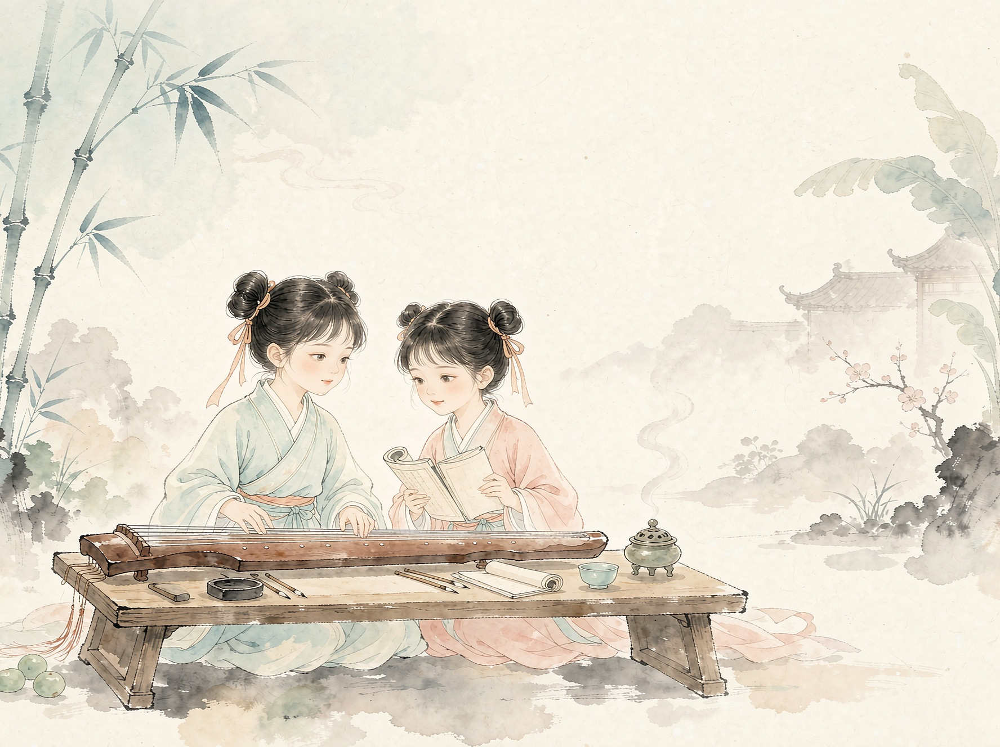

彼女子，且聪敏：承接上一课「谢道韫，能咏吟」而作评断。
彼，指蔡文姬、谢道韫；女子，女儿家；且，尚且；聪敏，聪慧灵敏。
此句在古书中常作「反衬」之用：女子尚且如此，男子更当如何。
今日读之，须把「反衬」还原为「平视」：才不分男女，学不问出身。
聪敏为阳、为捷，且字为递进之阴。
对比：谢道韫，能咏吟 / 彼女子，且聪敏
上句举其事，此句标其质，并以「且」字递进。一「且」字，古人是设反衬，今人当读作「尚能」——尚能如此，则人人皆当如此。
对比前文阴阳太和：以性别分才，是以「相」掩「性」。才之生，不系于男女，而系于所习；执相则失性，见性则相自平。
勘破俗见：两类常见偏差。其一，把此句读成「女子尚且聪敏，男子更该努力」，无意间把女子置于「次一等」的位置；其二，将古书一概目为陈腐，连其中「才不由出身」的洞见也一并弃之。契合般若范式：佛说女子聪敏，即非女子聪敏，是名女子聪敏。男女是假名，聪敏是缘成之相；执名则生高下，见相则知平等。
蔡文姬和谢道韫都是女孩子。
她们一个能听出琴弦断在哪一根，一个能把雪说得极美。
古时候读书的机会，女孩子常比男孩子少。
机会少还能这样，可见聪明不分男女。
今天机会一样多，谁都可以学得好。

落到心上理解
「妙喻」可否教？
可教一半：观察之法可教，取象之妙须自得。教者能给「多看一看」，不能给「一定这么看」。
此句的读法，最见分寸：古人用它激励男子，今人当用它破除偏见。同一句话，读出「谁更该努力」，还是读出「谁都可以努力」，是两种世界。
不借人以为衬，不以名以分高下；平视而读，即是无住。
女子尚且聪敏，男子更该自警
才不分男女；此句当读作「人人皆可」，不作高下之比
古书既含偏见，便不值一读
古书有其时代之限，亦有其洞见；读出分寸，方为读书
聪敏是女子少有的特例
聪敏是缘成之相，机会与熏习所成，非性别所赋
一、勘俗见。这一句最容易被讲偏。讲给孩子时，请落在「人人皆可学」，不落在「男孩更该努力」。
二、现代对照。若孩子听到「女孩学理科不行」之类的话，可用此二例作反问：机会与熏习才是关键。
三、承接常变主线。社会机会、观念风气（可变之相）；才由习成、学不问出身（不变之常）。
四、承接教与学二分。机会是外给之教，学之深浅在自己。
承接选择力练习：听到「某类人不行」的说法，先找两个反例再判断。
字义与句读
彼：指蔡文姬、谢道韫。女子：女儿家。且：尚且，表递进。聪敏：聪慧灵敏。
全句释义：她们只是女子，尚且如此聪敏。
二命题考辨
表层因缘
此句在蒙学中是「反衬」句：以女子之聪敏，激男子之自警。其修辞效力来自时代的性别预设，此预设今日已不成立，故读法须随之调整。
深层因缘
「且」字所隐含的前提是「女子本不如男」。修辞上有效，观念上有偏。今日读古书，正当练一种功夫：把「有效的修辞」与「过时的前提」分开，取其所见，舍其所蔽。
现代对照认知
性别与才能的关系，今日已有共识：差异多在机会与期待，不在禀赋。此二例恰可作「机会最少而成就最高」的注脚，读来更有力。
般若范式互参
男、女、聪、敏，皆是因缘假名。
联动三才五蕴太极空杯模型：才之空体不系性别，空则能受；机会与熏习是器相，器有厚薄。器薄而空在，才仍可出。
呼应「本乎数」：机会之数少，成就之数可以多；数不决定，习乃决定。
延伸义理：
《金刚经》：是法平等，无有高下。才之法，本无高下。
《道德经》：知其雄，守其雌。知高下之设而守平等之心。
三跨典互参（老庄、般若对照）
《道德经》：天下莫柔弱于水，而攻坚强者莫之能胜。柔弱之相，不碍其用。
《庄子》：齐物。齐者，平也；平其高下之见。
串联前文：二才女既举，此句作评；评中带偏，正是读古书的分寸所在。
四和前面课程的张力
次第链条继续延伸：
……谢道韫，能咏吟 → 彼女子，且聪敏
呼应「曰仁义，礼智信」：平视待人，是「礼」之本；
呼应「教之道，贵以专」：专学不问出身，问出身则学不专；
呼应「玉不琢，不成器」：机会是琢具——具少而琢勤，器亦可成。
古书中的性别预设，如何在教学中既指出又不强化？
「反衬」修辞若被取消，此二例的教育意义是否会减弱？
今日的「机会平等」在家庭中如何真正落实？